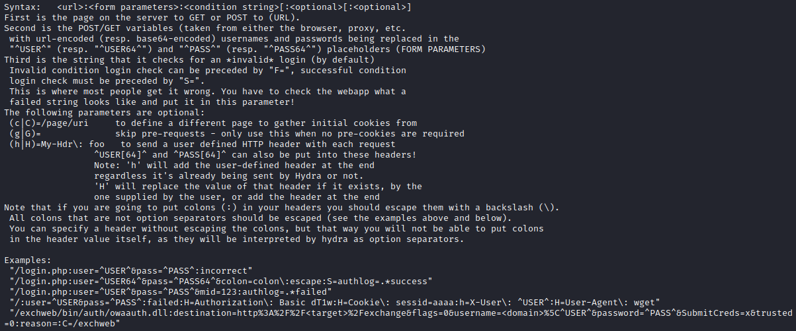
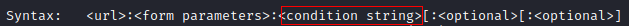
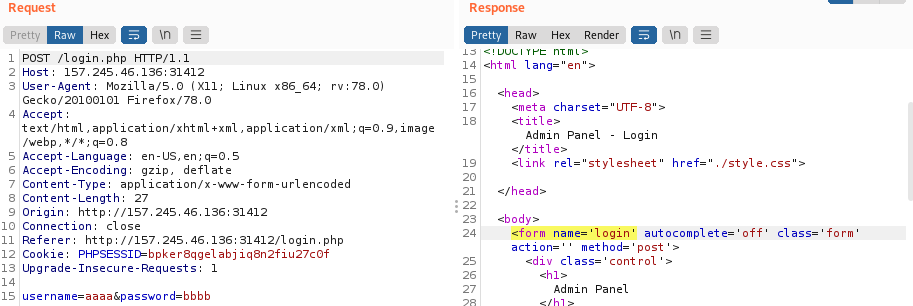

Login Form Brute Forcing
Admin Panels with OS Command Capabilities:
https://github.com/b374k/b374kSupported Services by Hydra hydra -h | grep "Supported services" | tr ":" "\n" | tr " " "\n" | column -e
To decide which module we need, we have to determine whether the web application uses GET or a POST form.
If we recognize that any of our input was pasted into the URL, the web application uses a GET form. Otherwise, it uses a POST form
HTTP or HTTPSBased on the URL scheme at the beginning, we can determine whether this is an HTTP or HTTPS post-form
• http[s]-{head|get|post} → for Basic HTTP Authentication
• http[s]-post-form → for login forms, like .php or .aspx and others
To know how to use the modules, we can use the "-U" flag to list the parameters it requires and examples of usage
Fail/Success String
Syntax: <url>:<form parameters>:<condition string>[:<optional>[:<optional>]
To use it we need to pass these parameter
◇ URL path, which holds the login form
◇ POST parameters for username/password
◇ A failed/success login string, which lets hydra recognize whether the login attempt was successful or not
| Type | Boolean Value | Flag |
|---|
| Fail | FALSE | F=html_content |
| Success | TRUE | S=html_content |
• If we provide a
Fail string, it will keep looking until the string is not found in the response
◇ Since we cannot log in to see what response we would get if we hit a success, we can only provide a string that appears on the logged-out page to distinguish between logged-in and logged-out pages
• If we provide a
success string, it will keep looking until the string is found in the response.
Fail String Examplehydra -l admin -P passwordWordlist.txt -f [host] -s [port] http-post-form "/login.php:username=^USER^&password=^PASS^:F=<form name='login'"